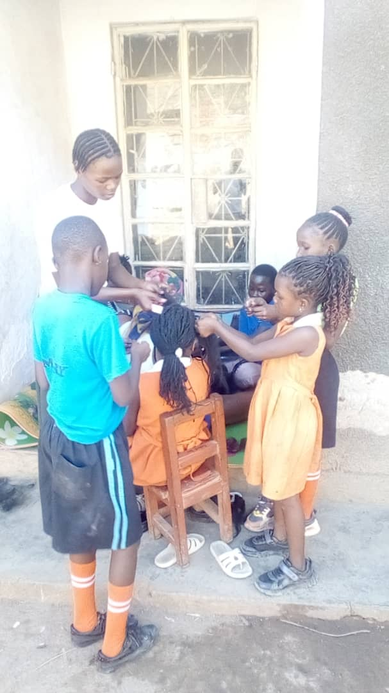
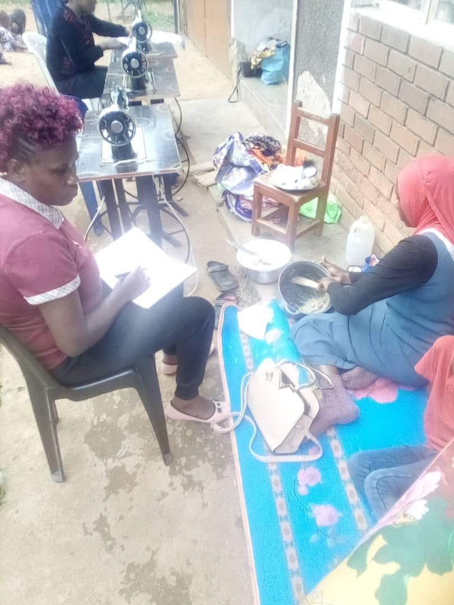
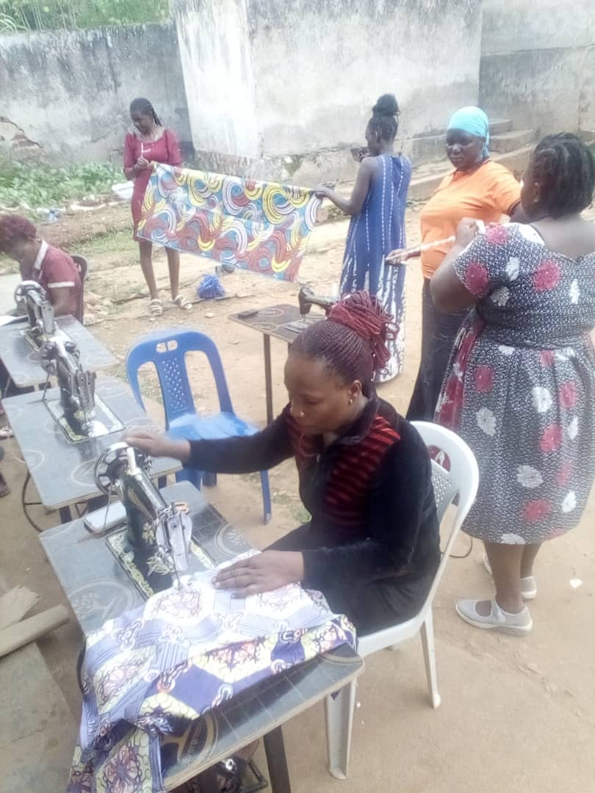
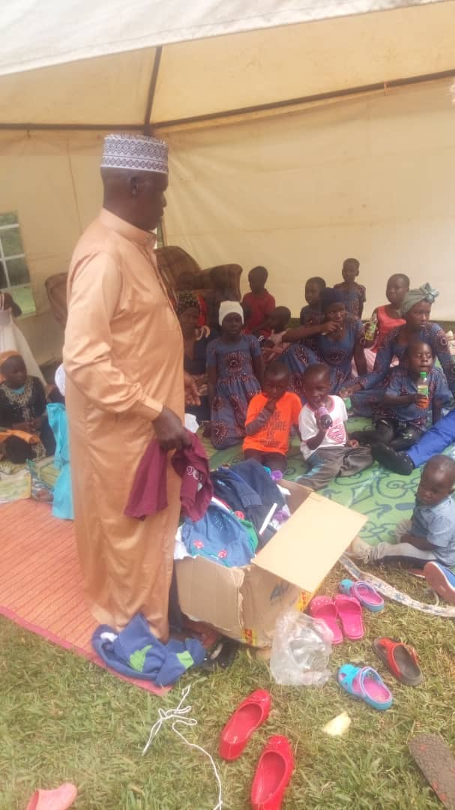
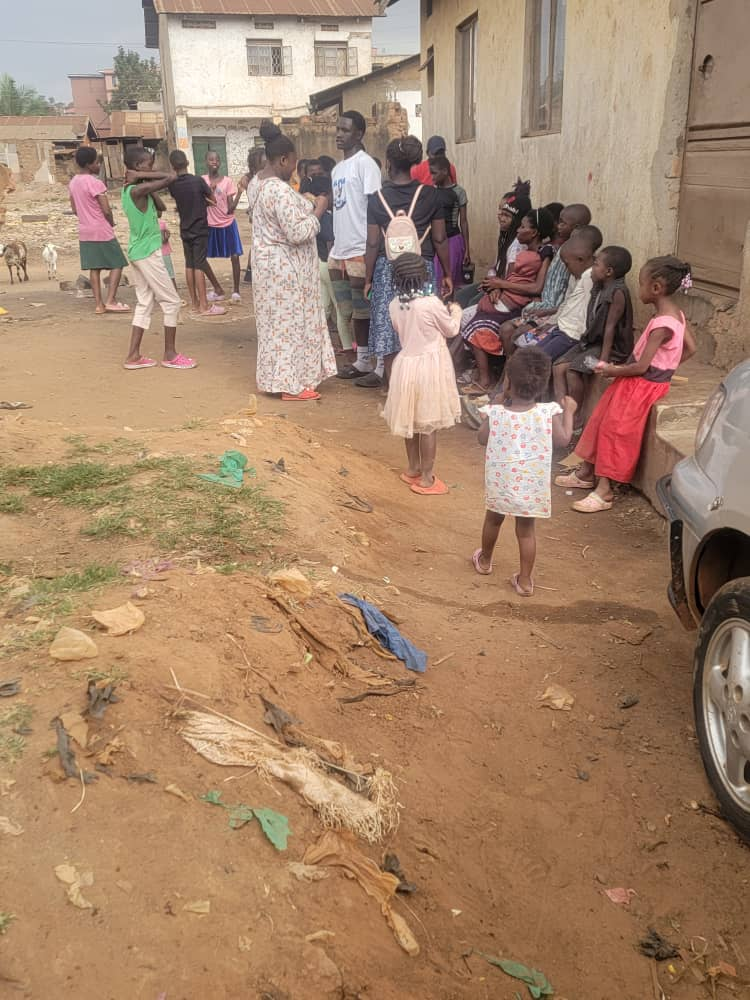

Mission
To provide accessible vocational skilling, leadership training and mentorship to youth especially those from marginalized backgrounds enabling them to create jobs and improve their livelihood.
Muslim Ambassadors Uganda — building hope, dignity, and opportunity for vulnerable communities across the nation.
Support Our WorkMuslim Ambassadors of Uganda (MAU) is an organisation that was started by Muslim Youths in 2017, registered in 2019 and has spread through the 4 major regions of Uganda, Africa and the diaspora with a membership of over 280,000 members majority–60% of whom are youths, and young people; and 30%, other faiths. We operate in 116 districts in Uganda and we have 596 ground coordinators and Ambassadors from grassroots to the national and international level. MAU works to promote decent life among especially marginalized categories of people in Uganda, through implementing initiatives that encourage the people to think positively and to engage in socially and economically viable activities so as to enhance their income levels. MAU also implements humanitarian aid projects.



Muslim Ambassadors Uganda (MAU) is a community-centered organization committed to improving the lives of vulnerable children, youth, and disadvantaged families through care, education, empowerment, and skills development. Founded with a vision of promoting compassion, dignity, self-reliance, and social transformation, MAU works to uplift communities by providing holistic support to orphans, destitutes and vulnerable children while equipping youth with practical vocational and life skills.
To provide accessible vocational skilling, leadership training and mentorship to youth especially those from marginalized backgrounds enabling them to create jobs and improve their livelihood.
To be a leading youth development organization that empowers young people to become economically independent and socially responsible citizens who contribute to Uganda’s national development.
we have over 6 orphanages in different districts these include:
Kajoji, Busunju, Hoima Road, Mityana District • Kikyusa, Luweero District
We have recently received a donation from Generations official (founder of Madia foundation) all away from United Kingdom at one of our orphanages in Bweyogerere.

we have various skilling centres in different districts to ensure nationwide service delivery. These include:
In 2025 we celebrated an inaugural graduation at the Kikyusa Skilling Centre in Luweero which was attended by Hajjati Hadijja Namyalo the representative of the Minister of education and sports (hon.Janet Kataha Museveni) and over 100 students graduated in various skills which proves our commitment to Uganda youth empowerment.

Students are provided with a variety of vocational and technical skills, culminating with certifications from the Directorate of Industrial Training. These skills ensure the transition of our students from informal employment to formal employment.
Talent development is emphasised through sports, theater arts, MDD, poetry, composition, writing, acting, filming, book club, language and literacy clubs, games and sports.
MAU provides shelter, care, education support, spiritual guidance, counselling, and vocational training opportunities to children and youth who face poverty, abandonment, unemployment, and limited access to education and sustainable livelihoods. The organization believes that every child deserves love, protection, education, and the opportunity to build a brighter future regardless of their background.
The MAU Skilling Centers focus on empowering young people, especially vulnerable youth and women, with hands-on vocational skills such as tailoring, crafts, entrepreneurship, agribusiness, computer literacy, and other income-generating skills that can help them become self-reliant and productive members of society.
To date, MAU has supported 100 orphans with meals, clothes, beddings, school fees and scholastic materials; and then trained 80 youths in tailoring, 60 in bakery, 90 in catering and 40 in crafting. Additionally, some trainees were supported with start-up packages: tailoring machines to 10 trainees, catering equipment to 5 trainees, and bakery equipment to 12 trainees.
Furthermore, MAU has supported 200 Muslim families with Iftar items during Ramathan (Islamic fasting) periods, and 120 families with items for Idd celebrations. Under its Humanitarian Program, MAU has supported 1200 vulnerable families with food supplies in Kotido and Abim- Karamoja districts in North-Eastern Uganda (as of 2024).





Hear from those whose lives have been touched by MAU’s work.

“The skilling centre changed my life. I now run my own tailoring shop.”
“MAU gave our children shelter, meals, and hope when we had nothing.”
“After the bakery training, I support my whole family. I am proud.”
Muslim Ambassadors Uganda warmly invites members of the public, philanthropists, companies, religious institutions, and development partners to stand together in supporting this noble cause. Every contribution, regardless of size, can help provide hope, dignity, education, shelter, and a brighter future to vulnerable children and youth.




you can use the following payment methods
0741987676
Tap to copy ✓ Copied!0791668835
Tap to copy ✓ Copied!UGX 50,000 feeds a child for one month · UGX 150,000 covers school materials for one term · UGX 500,000 sponsors a youth through vocational training
Account registered under: Muslim Ambassadors Uganda (MAU)
venue;Hotel Africana date;25th sept 2026 time;5pm The dinner is aimed at upliftting the life of children both in the orphanage and the skilling centre. Together on one round table the decision made transforms the billion dreams into reality. This builds a generation of morally upright,learned and educated citizens. Your contribuion is a great foundation to a better life of a young ugandan let's embrace this cause and greatly impact on this geat nation uganda. together we transform a child
our SACCO is fully certified and it has impacted the lives of both the students and the members of the organisation loans at low interest rates are given out .